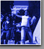
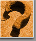
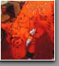
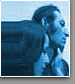

Home
Você está no Portal Cultura, site que divulga os eventos e acontecimentos culturais do Brasil, que são de fácil acesso a população de baixa renda.
 Quem Somos
Aqui você fica sabendo quais são os objetivos do Portal Cultura, quem o desenvolve e o que achamos sobre responsabilidade social e cultura.
Instituições
Várias instituições de diversos temas e objetivos com website e informações super úteis para você.
Entrevista descontraída com Heloisa Buarque, professora titular de teoria crítica da
cultura da ECO/UFRJ.
Notícias
Notícias sobre cultura no Brasil, curiosidades, fatos e descobertas.
Contato
Mande uma mensagem para o Portal Cultura, sugestões etc.
Eventos
Divulgamos vários eventos de dança, teatro, cinema, gratuitos e de baixo preço. Confira!